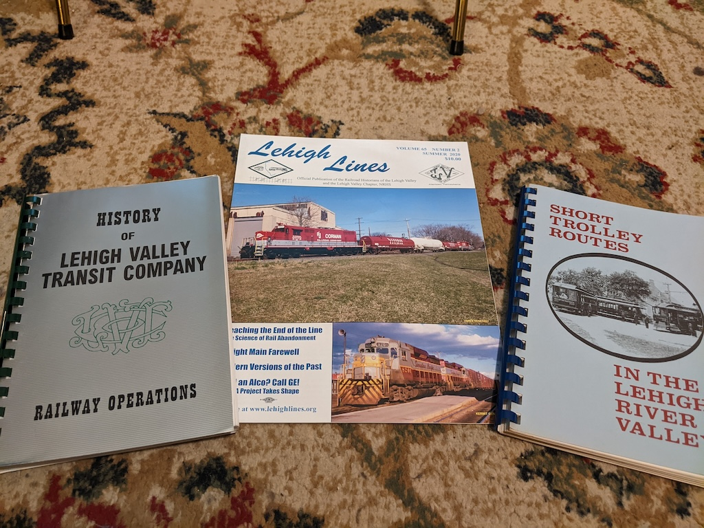
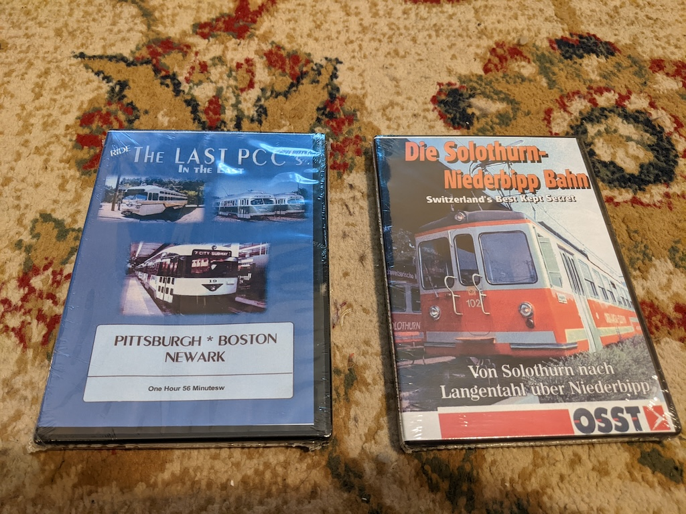
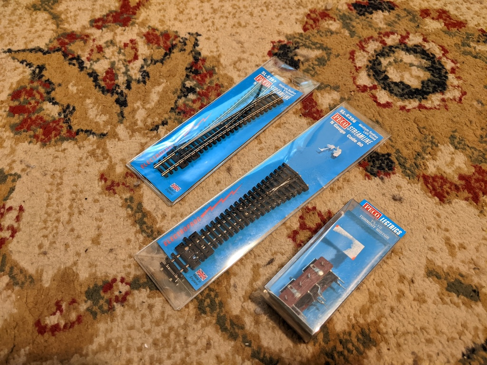
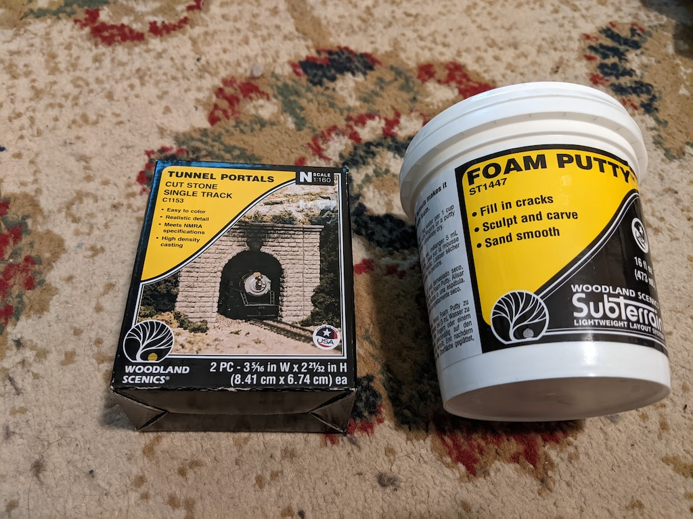
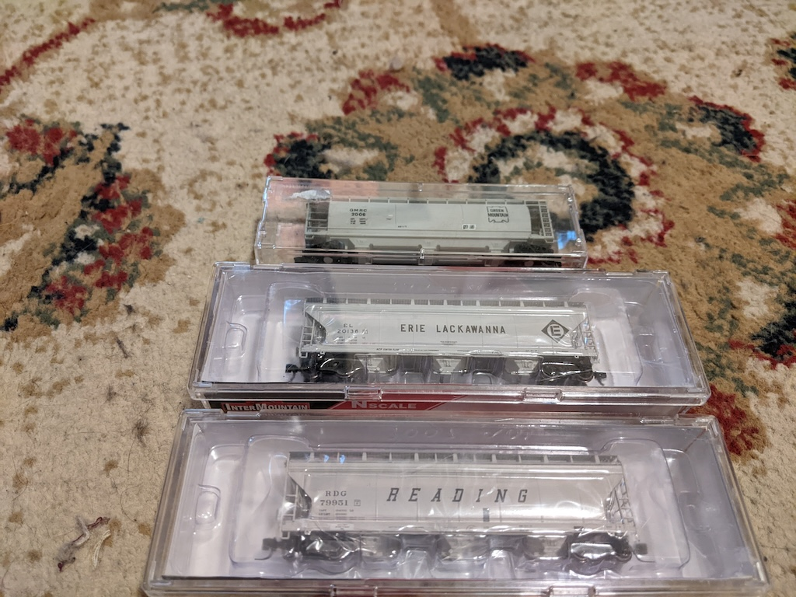

It’s the second weekend in November which means it was time for the Allentown Train Meet. These train shows are a mecca for train enthusiasts of all stripes. The lion’s share of the vendors are selling model railroading supplies, but there are plenty of dealers selling books, videos, or memorabilia. As always, there were several live model railroad setups going. I didn’t see an N scale one this year, which was a little disappointing. I didn’t buy any china this year, but I did find a good mix of stuff for my layout, books, and videos.
Media
The Lehigh Valley NRHS chapter had a table and I picked up two short histories, History of the Lehigh Valley Transit Company and Short Trolley Routes in the Lehigh Valley. They threw in a back number “Lehigh Lines”, their newsletter, for free. I’m not a member of the chapter though I probably should be. I have another book in this series, the history of the Lehigh & New England Railroad edited by Randolph Kulp, and I was impressed with the quality. It can be hard to find good information about the interurban era in the United States.

Nearby the NRHS table was one of several vendors selling railfan DVDs. Your typical railfan DVD will combine railfan-shot footage of rail operations, photographic stills, and maps, with narration provided a knowledgeable figure. It’s folk storytelling, of a sort. I have a set covering the Lehigh & New England from the 1950s and 1960s, full of old 16mm clips. The incomparable Mike Bednar narrates. Railfans have been filming trains since cameras existed. I picked up two today: Ride the Last PCC’s in the East and Die Solothurn-Niederbipp Bahn.

I mainly got the former for the shots of the old 47D Drake running in Pittsburgh. I rode it several times as a child, including once not long before it was discontinued. The latter was a lark; American railfans are somewhat parochial, and I was surprised to see anything covering Switzerland. I haven’t ridden the Solothurn-Nierderbipp line yet. No idea what language the DVD is even in.
Tracks
As a rule, Lionel/O scale dominates the show. I model in N scale, which is considerably smaller (1:148 vs 1:48). Still, it’s well-represented, and I found a dealer who had Peco turnouts. I started buying Peco turnouts (switches) a few years ago after having a lot of problems with the Code 80 Atlas turnouts I’d used for years. Trains derailed, or stalled, and the side-mounted switch machines take up valuable space on the platform.

With Peco the switch machine is mounted underneath. I’ve just been hand-throwing switches to this point, so I picked up one switch machine to experiment. I don’t have an immediate need for either of these turnouts, but Peco is based in the UK, and occasionally there are problems with availability in the states. Bird in hand and all that.
Landscaping
I’m refactoring the back right corner of my layout; converting the passing loop into a through track with a siding serving a cement plant. This means deleting the double-track tunnel that I was planning, but adding a single-track tunnel to the outer loop behind it. I have some double-track tunnel facings, but no single-track tunnel facings. Several vendors had Woodland Scenics kit, and one had what I was looking for (though I did agonize between wood, concrete, and stone, before deciding on the latter).

I also got some foam putty for rebuilding the ridge around the cement plant. It’s easier to work with than caulk; better for filling gaps.
Rolling stock
I mentioned my new concept of a cement plant on the layout. I’m going to need some covered hoppers to serve it, and I only have one. Driving out to the train show I was determined to pick up a few, and as it happened I found three.

I haven’t settled on a prototype for my layout, beyond a vague notion of the Northeast United States in the 1980s. Green Mountain, Erie Lackawanna, and Reading are plausible flags for that period.
Next steps
Once I rebuild the ridge where the cement plant goes, I’ll need to assemble the cement plant itself. That’s a Walthers kit and it’s in transit. I also need to experiment with wiring the Peco switch machine; all my experience is with Atlas machines. These projects dovetail nicely; the turnout that controls access to the cement plant lead is one of the last Atlas turnouts on the layout.